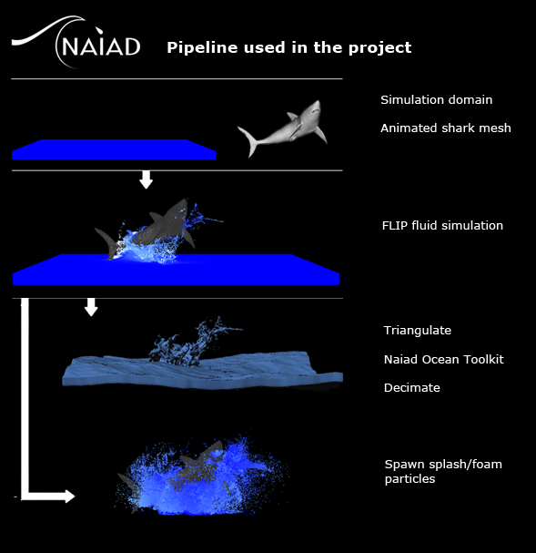
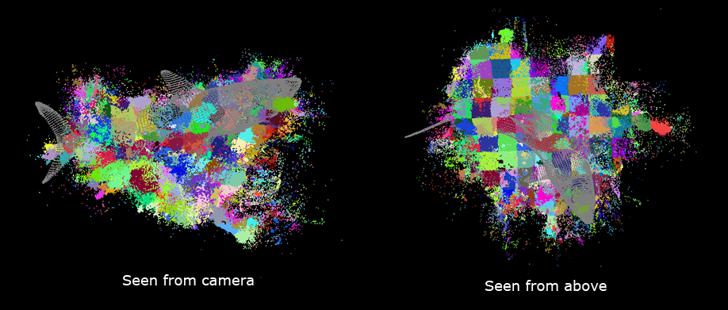
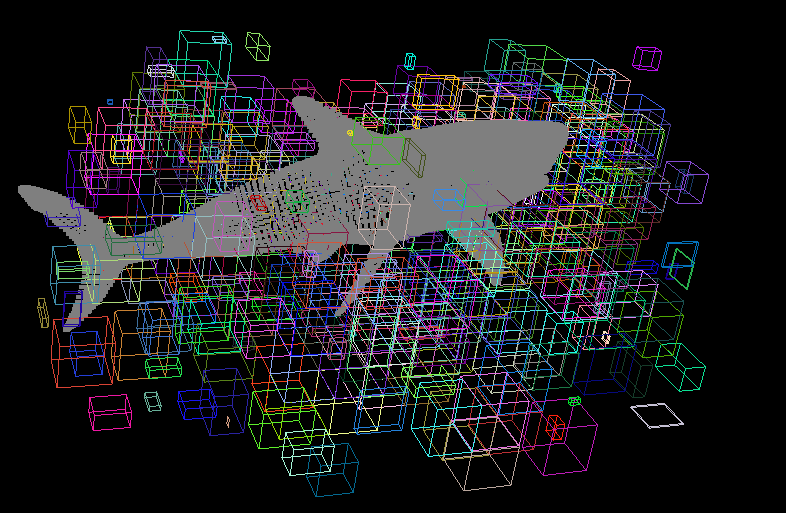
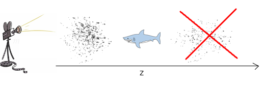
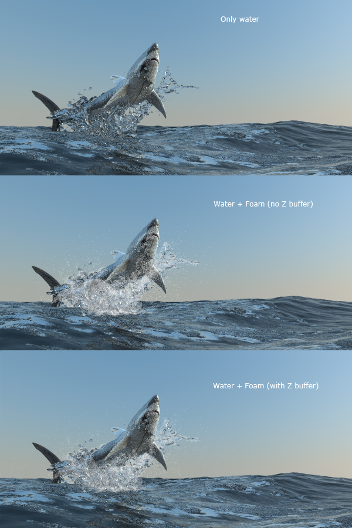
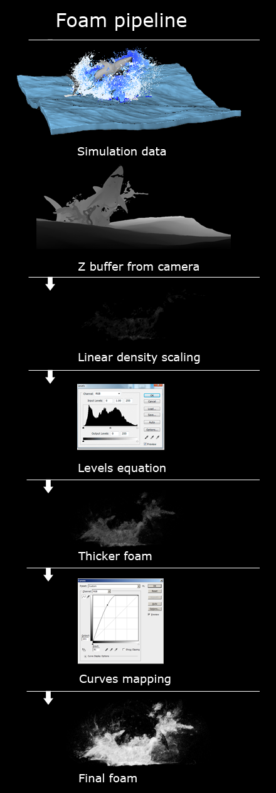
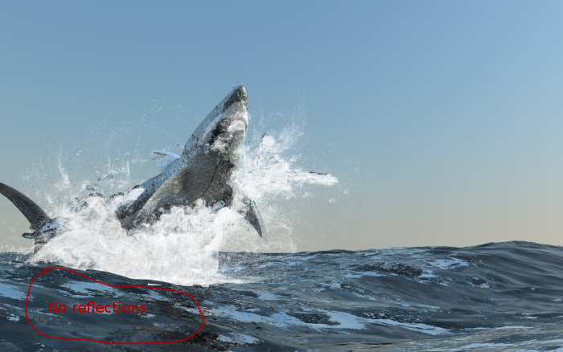
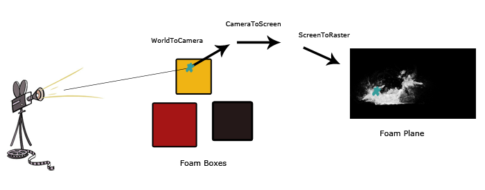
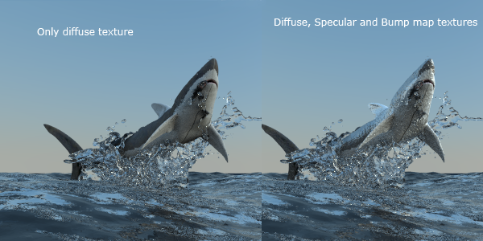

Introduction
The goal of this project was to explore different ways of rendering foam and splashes. Foam is an interesting problem to solve in rendering since it is impossible for us to model all the detail. In foam, there is an huge amount of air bubbles inside the water. Even if we could store all this data, tracing rays would also be impossible since for every interface intersection, two new rays have to be traced. Therefore, in my final project, I have tried a different method that is fast and scales well with increasing foam geometry.
Simulation Data
I used the fluid simulation software Naiad by Exotic Matter (http://www.exoticmatter.com/) to create my input geometry for the water and the foam. Below is a high-level pipeline example of how I used Naiad. To start the simulation, I used an animated shark mesh that jums up in the air. This created the particle based FLIP fluid simulation. Once you have the FLIP fluid simulation, you separate the next process into two steps:
- Create a water mesh
- Spawn foam and splash particles

Water Mesh
The water is stored as a triangular mesh since PBRT (and other ray tracers) has a nice acceleration structure for triangles. This makes intersection tests fast and accurate. An other option would be to convert the water to a volume and march the rays through it. The Naiad Ocean Toolkit was added "on top" of the meshed geometry to a realistic ocean. In the end, a mesh decimation pass is performed to remove triangles that don't provide any extra geometry (i.e the same geometry can be represented with a lower triangle count).
Storing Foam Particles
To store the foam particles, we need a nice data structure that helps us speed up rendering since we are going to have a large amount of particles. Naiad uses an adaptive grid approach to divide the data in the scene. I ended up storing the particles exactly the same way as Naiad by simply place each particle in different box shaped sub-grids. This can be seen in the picture below where particles with the same color belong to the same sub-grid.

The sub-grids don't necessarily have to be aligned in a nice way and create a uniform grid (and they are allowed to overlapped). The only important part is that they have to encapsulate their particles as tight as possible. Later on, in the global illumination section, we will see why this matters. Below is an example how the sub-grids can look like (only 10% of the total ones are shown to make it easier to see). Notice how they vary in size.

Render the Foam Plane
The main idea in my foam rendering is to render a 2D foam plane from the perspective of the camera. At each pixel, we want to know the density of the foam (how many foam particles 'hit' that specific pixel). One approach would be to cast rays from the eye to all the pixels in the film plane and from there march the particles and count how many that were hit. A much faster way is to transform the world positions of the particles into Camera Space. Given the position of a particle in Camera space, the depth coordinate z won't affect the position in the image plane and we have reduced a 3D problem to 2D. Actually, once we have a position in Camera space, we can easily transform that position into first Screen space and finally Raster space. This will gives us the corresponding 2D coordinate in the image plane.
Init the Foam Plane
//Init foam plane
for all particles do
camera_position = WorldToCameraTransform(particle.world_position)
screen_position = CameraToScreenTransform(camera_position)
raster_position = ScreenToRasterTransform(screen_position)
if (raster_position.xy is in inside image plane dimensions)
++foam_plane(raster_position.xy) ;
One problem with the code given above is that it doesn't take account if an object is blocking the foam or not. For example, let's say the camera looks at one side of a big traveling ship that creates some nice foam. It is very likely that the other side also has foam, but to take this foam into the density approximation makes no sense. To solve this, we introduce the classic concept of a Z buffer. A Z buffer is a 2D image that tells us the closest distance from the camera to any object in the scene (The Z buffer will not store distances from the camera to the particles). Once we have the Z buffer, we can test if a foam particle is in front or behind an object in the scene:

This changes the previous code to:
//Init foam plane
for all particles do
camera_position = WorldToCameraTransform(particle.world_position)
screen_position = CameraToScreenTransform(camera_position)
raster_position = ScreenToRasterTransform(screen_position)
//Is the particle in front or behind an object?
if (camera_position.z > z_buffer(raster_position.xy)
continue
if (raster_position.xy is in inside image plane dimensions)
++foam_plane(raster_position.xy) ;
Here is an example of a rendered image with and without the use of a z buffer:

Linear Density Scale
Next, we want the foam plane to have values in the range from 0 to 1. To do this, we find the pixel in the foam plane with the largest particle count and divide every pixel with this value.
//Re-scale density
max_density = 0
for all pixels in foam plane do
max_density = max(max_density, foam_plane(x,y))
for all pixels in foam plane do
foam_plane(x,y) /= max_density
Foam Color Correction
When we normalize the foam plane, a lot of the foam will have low values and be hard to see. To correct this, we will apply common color correction tricks to make the foam look the way we want it to. Now the value of all foam pixels are in the range of 0 to 1 and therefore this is fairly simple. The first step is to apply the Levels equation, which can be recognized from either Photoshop, Gimp or any other photo editing software. With this tool, we can make the foam look thicker without losing detail (which we would if we just linearly multiplied pixel values in the foam plane). The final step is to apply the same technique as Curves, also popular in image software. This tool creates a map that tells us how to transform each pixel value. This tool is great for making the foam more 'white' (caused by specular reflections inside the foam) without losing too much detail.
Foam pipeline
Here is an overview of the foam pipeline that was used in the project. Everything was done directly in PBRT. Instead of passing bezier points to the Curves transformation, I exported a text file from gimp with the actual curve. Once in PBRT, the curves operation is similar to a texture lookup.

Compositing Render and Foam plane
Once you have rendered your scene (without foam), you can add the rendered image and the foam plane together with the "Screen" method.
for all pixels do
final_image(x,y) = 1.0 - (1.0 - render(x,y)) * (1.0 - foam_plane(x,y))
Global Illumination

If you compare the picture above with the final render, you can see that there are no reflections of the foam in the one above. This is something we want in our renders to make it look real. While watching reference pictures of, I realized that in most cases, there's not a lot of detail in the reflections. This is something we could take advantage of. What approximations can we make to still have good results and fast render times?
Foam Box Intersections
Instead of storing every particle in PBRT and in the bounding volume hiearchy, we are only going to store the previous mentioned sub-grids. Actually, we are not even going to bother perform any ray-particle (or ray-sphere if the particles have a radius) intersection tests. All we care about are the intersections of the sub-grids, also called foam boxes. But we are not going to calculate any differential geometry. In fact, even if we hit the box, it is always going to return false, i.e no reflection or refraction will occur at the surface of the box.
Foam Plane Lookup
Similar to what we did when we created the foam plane, we are now once again going to convert our points into camera, screen and eventually raster space. If a ray hits a foam box, we transform this point to raster space. If inside the foam plane, we use the transformed coordinates to do a lookup in the foam plane and store this value in the ray object (in PBRT a member variable had to be added to the class Ray).

Modifying the Integrator class
In PBRT, the Integrator class performs reflection and refraction calculations (or SpecularReflect and SpecularTransmit as the functions are called). This needs to be slightly modified now that the Ray object has information about the foam.
Spectrum Li = renderer->Li(scene, rd, sample, rng, arena);
L = f * Li * AbsDot(wi, n) / pdf;
return L;
Needs to be changed to:
Spectrum Li = renderer->Li(scene, rd, sample, rng, arena);
L = f * Li * AbsDot(wi, n) / pdf;
return rd.foam_alpha ? Spectrum(1.0, 1.0 , 1.0) - (1-L)(1-rd.foam_alpha) : L;
where rd.foam_alpha is a Spectrum object in the Ray class. This is exactly the same operation as the "Screen" method described in the Compositing Render and Foam plane section above. The same blending that we did with the final render image and the foam plane are now we being computed on every reflection and refraction and it looks like the foam is reflected (see Final Render image at the top).
Other
Wet Layer

To make the shark look wet, a bump map together with a specular map was used.
Water Shader
The water was rendered with the PBRT material Glass with Kr and Kt as 1 and index of refractions as 1.33
Acknowledgement
Thanks to Igor Zanic (http://www.igorfx.com/) for helping me with the Naiad simulations and providing useful feedback on the rendered images. The Exotic Matter team for letting me use their awesome fluid simulation software